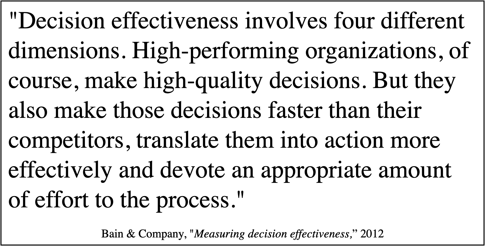
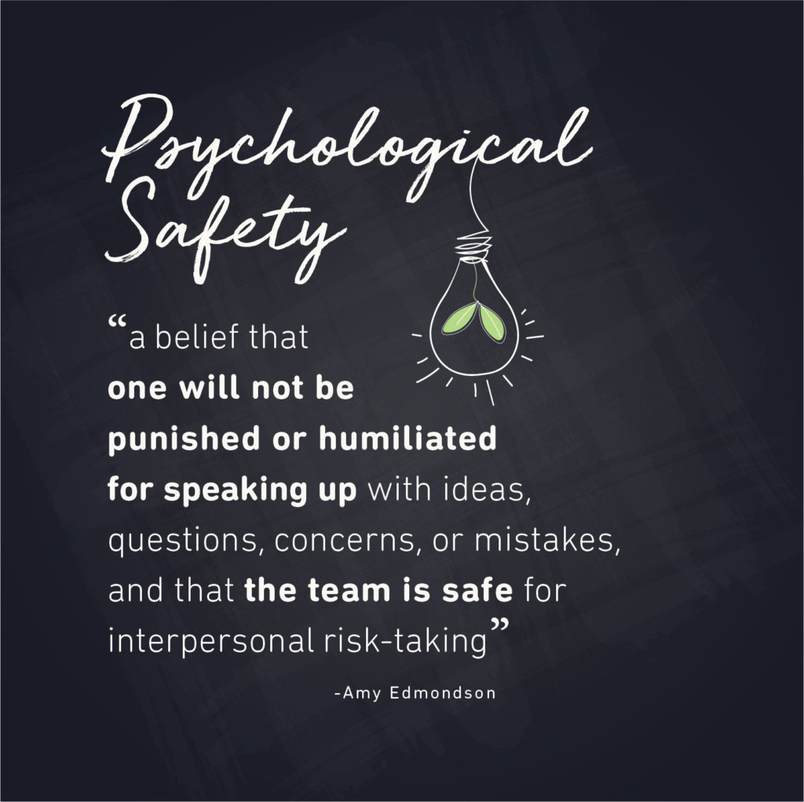

Every organization that's failing at AI right now has a perfectly reasonable-sounding explanation for why. The data wasn't clean enough. The tools weren't mature. The team needed more training. And some of that is even true — but none of it is the foundational problem. The foundational problem is the organizational machinery that was already misfiring before anyone plugged in a single AI tool — and is now misfiring faster, more confidently, and across a much wider blast radius.
The first article in this series made the case that AI doesn't fix broken organizations — it amplifies them. That's easy enough to nod along with in the abstract. It's harder to sit with when you start tracing it through the specific systems that determine how your organization actually runs. So let's walk through the machinery and see what the amplifier actually does when it's plugged into something that wasn't built for the voltage.
Start with decision rights — who gets to decide what, and how. In a healthy organization, decisions land with the people closest to the relevant information. Not because the org chart says so, but because the organization has built the systems that make that work: clear ownership, enough shared context that people can make calls without escalating everything, and enough trust that leadership doesn't second-guess every outcome. That's the organization where AI actually earns its implementation budget. It puts better information in front of the people already positioned to act on it. Decisions get sharper and faster because the structure was already sound.
Now flip it. In an organization where decision rights are murky — where three people think they own the same call, or nobody's sure whether they're allowed to make it without air cover — AI doesn't clarify anything. It generates more options, more analysis, more confident-sounding inputs, and dumps all of it into a system that already couldn't decide. Instead of one team debating the same question for two weeks, now three teams are debating it with AI-generated evidence backing every side. This isn't a new problem AI created — it's one AI made impossible to ignore. Bain found a 95% correlation between companies that excel at making and executing key decisions and those with top-tier financial results. The bottleneck was never information. It was the fact that nobody knew whose call it was — and they would have, if decisions and their context were actually documented and shared.

Next, look at information flow — not the data infrastructure, but the human one. How does information actually move through the organization? Who knows what, and how did they find out? In organizations that work, this isn't accidental. There are systems — real ones, not just a wiki and a prayer — that make sure the right context reaches the right people at the right time. Status is visible without requiring someone to ask. Decisions are documented where people can find them. Institutional knowledge is captured and kept current, not just resident in someone's head.
AI plugged into that kind of system does exactly what the pitch deck promised. It synthesizes information that was already accessible, surfaces patterns across data that was already flowing, and helps people move faster because the raw material was already there. The AI isn't inventing organizational knowledge — it's accelerating what the organization already knew how to share.
Now plug it into the other kind. The kind where critical context lives in three people's heads and a Slack thread from November. Where the same question gets answered differently depending on who you ask and when. Where half the organization is operating on assumptions that were true two quarters ago and nobody corrected because there's no mechanism for correction — just occasional hallway conversations that reach whoever happens to be in the hallway. AI in that environment doesn't surface the right information. It surfaces all the information, contradictions and all, and can even flag the conflicts. But it can't smell the room — can't tell which version reflects the decision that actually stuck, which number everyone quietly knows to ignore, which document was dead on arrival. The humans who used to navigate that mess carried thirty years of organizational air in their lungs. The AI has no nose.
The scale of this is staggering even without AI in the picture. Gartner found that knowledge workers spend roughly ten hours a week searching through tools and systems for answers — not creating, not deciding, just looking. AI doesn't fix that. It just searches the same mess faster and delivers a hallucinated answer with a straight face — one that drops right back into the information pool for the next prompt to find.
Then there's role clarity — not the org chart version, but the real one. Who's actually responsible for what, and does everyone involved agree? In a well-designed organization, roles aren't just titles — they're boundaries. They define where one person's judgment ends and another's begins. Not rigidly, but clearly enough that when something goes wrong, nobody has to waste time figuring out whose problem it is. The work gets done because people know what's theirs.
AI inside that structure is a force multiplier. It amplifies what each role can do without blurring the lines between them. An engineer uses it to move faster within their domain. A product lead uses it to synthesize customer data within theirs. The boundaries hold because they were real in the first place.
In an organization where roles are vague — where everyone's a little bit responsible for everything and therefore nobody's fully responsible for anything — AI makes the blur worse. It's suddenly easy for anyone to generate work product that looks like it belongs to someone else's function. Engineers are producing strategy decks. Product managers are writing architecture proposals. Not because they've developed that expertise, but because the tool made it easy and nobody's role definition was clear enough to say "that's not yours." And because responsibility and accountability were never properly separated — because the organization never baked that distinction into how teams actually operate — nobody knows whether that AI-generated strategy deck is a suggestion or a commitment. "I took a first pass at this" lands very differently when it comes with an apparently polished deliverable attached. The result isn't cross-functional collaboration. It's well-formatted territorial confusion.
Finally, feedback loops — how the organization learns. Not the quarterly retro that produces action items nobody tracks. The real thing: does information about outcomes actually make it back to the people whose decisions created them? In an organization with functional feedback loops, cause and consequence stay connected. A decision leads to a result, the result is visible to the people who made the call, and the next decision is better for it. It's not complicated. It's just rare.
The research backs this up. Amy Edmondson's work on psychological safety — now one of the most replicated findings in organizational behavior — found that higher-performing teams actually report more errors, not fewer. The difference isn't that they fail less. It's that they have the systems to surface failure and learn from it before it compounds.

AI in that system accelerates the loop. It can surface patterns in outcome data faster than any human could, connect results to the decisions that drove them, and flag when something's drifting before it becomes a quarterly surprise. The learning still happens at the human level — but it happens sooner, with better signal.
In an organization where feedback loops are broken — where decisions disappear into a fog and outcomes get attributed to whoever tells the most compelling story in the post-mortem — AI doesn't fix the disconnect. It polishes it. The team that launched a feature based on a misread of the customer data now has an AI-generated post-launch analysis that tells three different stories depending on which metrics you emphasize. The director who made the call never sees the one that would have made them reconsider, because nobody's job is to close that loop — and the AI doesn't know it should. Six months later, the same misread drives the next decision, except now it's backed by a dashboard that everyone references and nobody interrogated. The organization isn't learning faster. It's building a more sophisticated machine for not learning at all — and sounding quite sure of itself the whole time.
These aren't four separate problems. They're four pressure points on one system — and they interact. Murky decision rights create information gaps. Information gaps make role boundaries impossible to maintain. Without clear roles, feedback has nowhere to land. And without feedback, the decision-making never improves. It's a loop, and AI doesn't just touch one part of it. It touches all of them simultaneously, at speed, with confidence.
That's the amplifier problem. Not that AI introduces new dysfunction — it almost never does. It takes the dysfunction you've been getting away with and removes every buffer, every workaround, every quiet human correction that was keeping it manageable. What's left is the organization as it actually is, running at a speed it was never designed for.
The question isn't whether your organization has these problems. It does. Every organization does. The question is whether you've built the systems to keep them within tolerances — or whether you've been relying on the organizational equivalent of duct tape and hoping nobody bumps the table.
Which raises the harder question: how would you even know? Not after the bill comes due — before, when the menu's still in your hand. That's next.